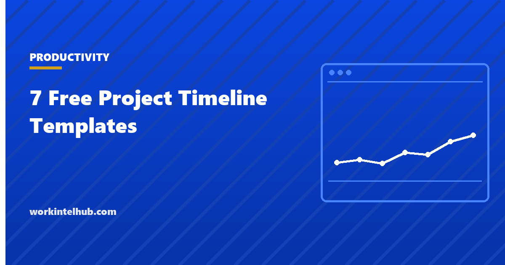

7 Free Project Timeline Templates

A timeline is the picture of the schedule: tasks or phases against dates, so that anyone can see what happens when and what overlaps. It is less precise than a full schedule with dependencies and more useful for communicating, which is why the timeline is what goes in the kickoff deck and the status report while the schedule stays in the project manager's file.
Seven timelines are here. Weekly and monthly Gantt-style grids that shade themselves in Excel from start and end dates, a milestone timeline, a phase roadmap for quarters, an event or launch countdown that works backwards from a date, a multi-project view, and a one-page summary for presentations.
Download the templates
Free files: Word, Excel and PDF
Three files, free, no email required. Word to edit, Excel to track, PDF to print or share.
Templates open in Microsoft Word, Excel, Google Docs and Sheets, LibreOffice and any PDF reader. Free to use and adapt for your organisation.
The seven timelines
| Timeline | Best for | Excel behaviour |
|---|---|---|
| Weekly Gantt | Projects of one to four months | Shades weeks from start and end dates |
| Monthly Gantt | Projects of six months to two years | Shades months from dates |
| Milestone timeline | Date-driven projects and reporting | Days to go and status |
| Phase roadmap | Programmes and annual plans | Quarter grid |
| Event countdown | Launches, events, go-lives | Due dates work back from the event |
| Multi-project view | Portfolio and resource planning | One line per project |
| One-page summary | Decks and kickoffs | Fill-in |
Making the Gantt grids work
Both Gantt sheets need one date in cell B3: the Monday of the first week, or the first day of the first month. Each task then needs a start and an end date, and the grid shades the overlapping weeks or months with a block character. It is deliberately simple: no dependencies, no critical path, no resource levelling. For those, use the project schedule templates, which carry predecessors and calculate durations, and treat the timeline as the presentation layer on top.
Print the weekly grid landscape; sixteen weeks fit on one page. For longer projects, use the monthly grid for the overview and a weekly grid for the current phase.
Working backwards from a date
Launches and events are planned from the end. The countdown sheet takes the event date and calculates due dates at twelve, ten, eight, six, four, three, two and one weeks before, plus the day itself. Fill in what must be true at each point: venue booked at twelve weeks, content final at four, rehearsal at one. The discipline is that every task has a due date derived from the one date that cannot move.
Timelines are for communication
- Show phases and milestones, not every task; the audience for a timeline is not the team doing the work.
- Mark today. A timeline without a today line does not tell anyone whether the project is on track.
- Put the baseline and the current forecast on the same milestone timeline so slippage is visible as a number.
- Update the timeline when the schedule changes; a stale timeline in a deck is worse than none.
- Use the multi-project view to show resource collisions across the portfolio before they happen.
Key takeaways
- A timeline is the communication layer over the schedule: phases, milestones and dates, not every task.
- The Excel Gantt grids shade from start and end dates; for dependencies and critical path use the schedule templates.
- Plan events backwards from the one date that cannot move.
- Mark today and show baseline against forecast so slippage is visible.
Frequently asked questions
What is the difference between a project timeline and a project schedule?
A schedule is the detailed model: tasks, durations, dependencies, resources and the critical path. A timeline is the summary picture of phases and milestones against dates, used to communicate. The timeline is derived from the schedule and updated when it changes.
How do I make a Gantt chart in Excel without add-ins?
List tasks with start and end dates, put the period dates across the top, and use a formula in each cell that returns a block character when the task overlaps that period. The weekly and monthly sheets in the download do this; conditional formatting can colour the blocks.
How many milestones should a timeline show?
Five to ten for a typical project: the points where a phase ends, a deliverable is accepted, or a decision is made. More than that and the timeline becomes a task list.
How do I plan a timeline for an event or launch?
Start from the event date and work backwards, fixing what must be complete at twelve, eight, six, four, two and one weeks before. The countdown template calculates the due dates from the event date.
Should the timeline show the baseline?
Yes, on the milestone timeline: baseline date, forecast date and the variance in days. It is the simplest honest view of whether the project is slipping and by how much.